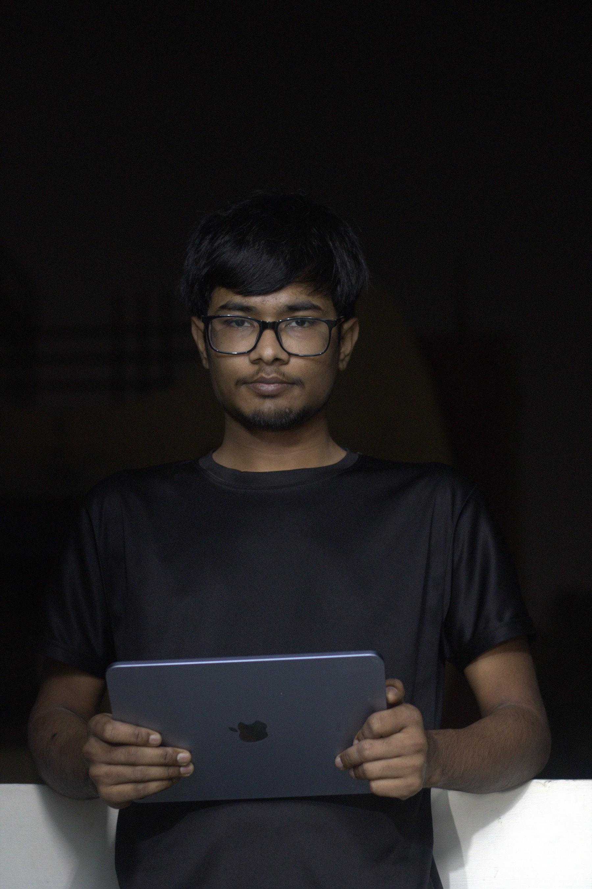

Nishant Kumar
Aspiring Software Engineer & Full-Stack Developer
Building AI-powered automation tools, modern web experiences, and practical student projects with Python, TypeScript, HTML, CSS, and creative energy.
Python, TypeScript, HTML/CSS, AI tools, and project-driven learning.


Featured Photo
Project-driven work with a clean personal identity.
This photo adds a more grounded and professional personal presence to the homepage. It helps the site feel more like a real portfolio and less like a generic template.
My goal is to keep this portfolio visually strong while making sure it clearly represents who I am, what I build, and where I want to grow next.
About
About Me
I am Nishant Kumar, a Class 12 student from Bihar who is focused on learning software engineering by building projects instead of only studying theory. I enjoy web development, Python automation, AI integration, and presenting my work in a way that feels clear and professional.
This portfolio keeps a cyber-inspired visual identity, but the content is now fully centered on my real skills, projects, growth, and career direction.
What I Do
What I Do
These are the core areas where I am building practical ability through real projects.
Web Development
I build responsive landing pages and modern portfolio websites using HTML, CSS, and JavaScript foundations.
Python Automation
I create scripts and automation experiments that solve useful problems and speed up workflows.
AI Integration
I work with AI-powered ideas such as Gemini-based automation, content systems, and smart tooling.
Content Creation
I also bring storytelling, editing, and presentation thinking from YouTube-style content creation.
Projects
My Projects
AUTO-YT
AI Automation
Auto-YT
An AI-powered YouTube automation project built around topic discovery, content creation, metadata generation, and publishing workflows.
Stack: Express, React, TypeScript, Gemini API
DESI-JARVIS
Python Project
Desi-Jarvis
A Python-based assistant project that reflects my interest in building interactive tools, utilities, and automation experiments.
Stack: Python, assistant logic, automation experiments
PORTFOLIO
Personal Brand
Nishant Portfolio
This live website presents my identity, projects, skills, and career direction with a cleaner and more professional design system.
Stack: HTML, CSS, JavaScript, responsive UI
DESI-SPY
Security Experiment
Desi-Spy
A public repository in my GitHub profile that can evolve into a stronger security-focused Python tool as I improve the project quality.
Stack: Python, security concepts, experiments
LUDO BUILD
Private Build
nee-ludo-fantasy
An in-progress Ludo game project that shows I am also experimenting with interactive product ideas beyond portfolio-style work.
Status: Private build in progress
Private project for now
Work Tracks
Three areas where I am actively building momentum.
WEB
Web Development
I design and build portfolio pages, personal sites, and landing page experiences with responsive frontend layouts.
AI
Python & AI
I enjoy combining Python automation with AI systems to create tools that feel useful, modern, and ambitious.
YT
Content Creation
I apply video editing and storytelling skills from YouTube-style content into how I present projects and ideas.
Resume
A quick summary of my background and direction.
I am currently a Class 12 student preparing for a future in software engineering. My current portfolio is built around practical learning, better project quality, and becoming ready for internships and serious development work.
Focused on building a strong technical base alongside academic preparation.
Growing through project-based work and continuous portfolio improvements.
I am aiming for internships, collaborations, and real product-building experience.
Latest Updates
Recent work and milestones from my learning journey.
Rebuilt my portfolio into a real personal brand site
I redesigned this website to focus on my actual identity, projects, and career direction.
Built Auto-YT as an AI-powered automation project
This project pushed me deeper into AI workflows, TypeScript, and product-style thinking.
Started publishing public Python experiments on GitHub
I began sharing more visible code work and building momentum through smaller projects.
Contact
Let's connect for projects, internships, or collaborations.
The best way to reach me right now is through LinkedIn or GitHub. If you want to discuss web development, automation, AI tools, or student opportunities, I would be glad to connect.
Portfolio
neeshant01.github.io
GitHub
github.com/Neeshant01
Email
Available on request via LinkedIn
Location
Bihar, India